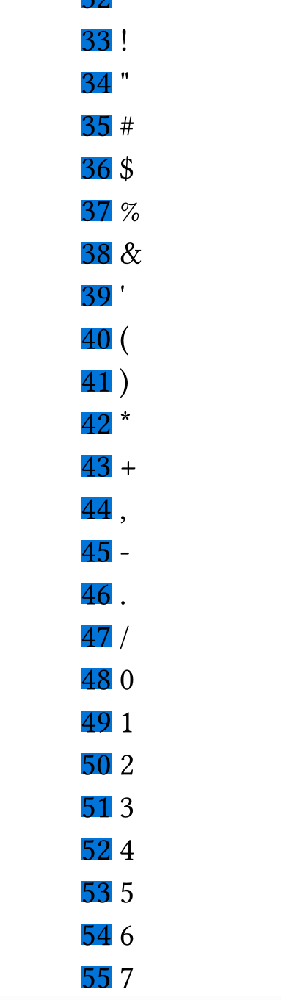
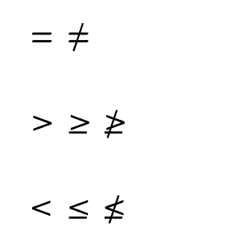
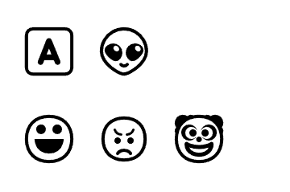
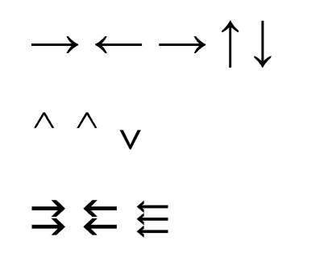
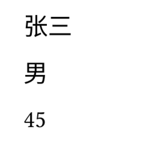

【Typst】3.Typst脚本语法
概述
Typst的核心就是它在标记语法的基础上提供了一个灵活强大的脚本语言，来支持复杂的排版操作。
本节就以一个脚本语言的角度，介绍一下Typst脚本的核心语法。
系列目录
字面量
// 字面量
#(2) // 整型字面量
#(3.14) // 浮点型字面量
#("你好") // 字符串字面量
#(true) // 布尔类型字面量
#(none) // 空字面量
类型判断
// 类型判断
#type(12) \ // int
#type(12.5) \ // float
#type(1>2) \ // bool
#type("hello") \ // str
#type(<glacier>) \ // label
#type([Hi]) \ // content
#type(x => x + 1) \ // function
#type(type) \ // type
#type(datetime.today()) \ // datetime
表达式
// 表达式
1+2*5 = #(1+2*5) // 1+2*5 = 11
#(1==2) // false
变量和函数
// 变量
#let a = 12 // 申明
#a // 12 // 使用
// 函数
#let add(a,b) = [#(a+b)] // 定义
#add(12,45) // 57 // 调用
#{
let str1 = [张三]
let str2 = [你好]
str1 + str2
}
控制语句
#for i in range(30,100) {
box(str(i),fill:blue) + " " + str.from-unicode(i) + "\n"
}

注释
// 单行注释
/*
多行注释
*/
数字
Typst包含两种数字类型，整型integer和浮点型float:
- 整型
integer：代表整数，可以是负数、零或正数。 由于 Typst 使用 64 位来存储整数，整数不能小于-9223372036854775808或大于9223372036854775807。 - 浮点型
float：一个实数的有限精度表示。Typst 使用 64 位来存储浮点数。
数字进制和科学计算法
// 数字进制
#(100) // 十进制100
#(0xFF) // 十六进制 = 255
#(0o77) // 八进制 = 63
#(0b11) // 二进制 = 3
// 科学计数法
#(6e2) // 600
#(2.3e5) // 230000
计算函数库calc
计算232的值：
#(calc.pow(2,32))
字符串
字符串可以看做是由若干字符按顺序组成的字符数组。
所有长度和索引都以 UTF-8 字符为单位。 索引从零开始，负索引会回到字符串的末尾。
string{
len() -> integer // 字符串在UTF-8编码字节中的长度
first() -> any // 返回字符串中第一个字符
last() -> any // 返回字符串中最后一个字符
at( // 返回定索引位置的字符
index：int, // 索引
default: any, // 超出索引范围后返回的默认值
) -> any
slice( // 截取子字符串
start:integer,
end:integer,
count: integer,
) -> string
clusters() -> array // 返回单个字符组成的数组
codepoints() -> array // 返回单个字符Unicode码组成的数组
contains(pattern:string/regex) -> boolean //判断字符串是否包含指定的模式
starts-with(pattern:string/regex) -> boolean //判断字符串是否以指定的模式开始
ends-with(pattern:string/regex) -> boolean //判断字符串是否以指定的模式结尾
find(pattern:string/regex) -> string/none // 在字符串中搜索指定的模式，并以字符串形式返回第一个匹配项，如果没有匹配项，则返回 none。
position(pattern:string/regex) -> integer/none //在字符串中搜索指定的模式，并返回第一个匹配项的索引，如果没有匹配项则返回 none。
match(pattern:string/regex) -> dictionary/none //在字符串中搜索指定的模式，并返回一个包含第一个匹配项详细信息的字典，如果没有匹配项则返回 none。
matches(pattern:string/regex) -> array 在字符串中搜索指定的模式，并返回一个包含所有匹配项详细信息的字典数组
value.replace( // 查找并替换匹配的字符串
pattern:string/regex, // 查找的字符串或模式
replacement:string/function, // 替换的内容或处理函数
count: integer, // 替换指定的前几项
) -> string
trim( // 从字符串的一侧或两侧移除匹配模式的内容，并返回替换结果
pattern:string/regex, // 查找的字符串或模式
at: alignment, // 可以使用 start 或 end 来仅修剪字符串的开头或结尾。如果省略，则会修剪字符串的两侧。
repeat: boolean, //决定是重复移除模式的匹配项还是只移除一次。默认为 true。
) -> string
split(pattern:string/regex) -> array // 按字符串或模式进行切分，返回数组
}
其中，match()和matches()方法的字典形式：
(
start: int, // 匹配项的起始偏移量
end:int, // 匹配项的结束偏移量
text: string // 匹配的文本
captures: array // 包含每个匹配的捕获组的字符串。 数组的第一项包含第一个匹配的捕获组，而不是整个匹配！除非 pattern 是带有捕获组的正则表达式，否则此项为空。
)
转义字符
// 转义字符
#("\"") // "
#("\\") // \
#("\n") // 换行
#("\r") // 回车
#("\t") // 制表符
#("\u{2665}") // unicode字符 ❤
基础用法
#("这是字符串") // 这是字符串
#("这是字符串" + "2") // 这是字符串2
#("这是字符串" + 2) // 【报错】
#("这是字符串" + str(2)) //这是字符串2
#("这是字符串，" * 2) // 这是字符串，这是字符串，
#let str1 = "这是字符串"
#str1.len() // 15
#("123".len()) // 3
#("abc".len()) // 3
#str1.at(0) // 这
#str1.clusters() // ("这", "是", "字", "符", "串")
#str1.codepoints() // ("这", "是", "字", "符", "串")
#(
"
第一行
第二行
第三行
".split("\r\n")
) // ("","第一行","第二行","第三行","")
特殊符号和表情符号
Typst提供了sym和emoji两个模块来辅助特殊字符和表情符号的书写。
#sym.eq // 等于
#sym.eq.not // 不等于
#sym.gt // 大于
#sym.gt.eq // 大于等于
#sym.gt.eq.not // 不大于等于
#sym.lt // 小于
#sym.lt.eq // 小于等于
#sym.lt.eq.not // 不小于等于

对于等于、大于、小于的缩写理解和记忆：
大于 greater than //gt
小于 less than //lt
等于 equal to //eq
#emoji.a
#emoji.alien
#emoji.face
#emoji.face.angry
#emoji.face.clown

// 单箭头
#sym.arrow
#sym.arrow.l
#sym.arrow.r
#sym.arrow.t
#sym.arrow.b
// 帽子
#sym.arrowhead
#sym.arrowhead.t
#sym.arrowhead.b
// 多箭头
#sym.arrows
#sym.arrows.ll
#sym.arrows.lll

数组和字典
数组
以下是Typst数组类型及其所有方法的总结：
array{
len() -> int // 数组的长度
first() -> any // 返回数组中的第一项
last() -> any // 返回数组中的最后一项
at( // 返回数组中指定索引位置的项
int, // 索引
default: any, // 默认值
) -> any
push(any) // 在数组末尾添加一个值。
pop() -> any // 从数组中移除并返回最后一个项
value.insert( // 在数组的指定索引位置插入一个值
int, // 插入位置
any, // 要插入的内容
)
remove(int) -> any // 删除指定位置的值并返回
value.slice( // 获取数组的切片
start:int, // 起始索引（包括在内）
end:int, // 结束索引（不包括在内）
count: inte, // 要提取的项数。
) -> array
contains(any) -> boolean //判断数组是否包含指定的值
/*-- 搜索 --*/
// 搜索给定函数
find(function) -> any/none // 返回true的第一项
position(function) -> int/none // 返回true的第一项的索引
filter(function) -> array // 返回true元素的新数组
map(function) -> array // 对所有元素操作后的新数组
enumerate() -> array // 返回(index,value)形式数组
zip(array) -> array // 合并数组
fold( // 使用累加器函数将所有项折叠成一个单一的值。
init:any, // 初始值
folder:function, // 折叠函数
) -> any
sum(default:any) -> any // 所有项求和（累加）
product(default:any) -> any // 累乘
any(function) -> boolean // 数组中任意一项满足函数条件
all(function) -> boolean // 数组中所有项满足函数条件
flatten() -> array //将所有嵌套数组合并为一个扁平的数组
rev() -> array // 返回逆序的新数组
join( // 将数组中的所有项合并为一个项
separator：any, // 分隔符
last: any, // 最后两项之间的替代分隔符
) -> any
sorted(function) -> array // 按函数规则排序后的数组
}
数组的基础用法
数组用括号包裹，以逗号分隔：
// 数组
#(1,2,3) // (1,2,3)
#("你好",12,[这里是内容]) // ("你好",12,[这里是内容])
像上面这样不用let申明数组变量，则直接原样输出。
#let arr2 = ("你好",12,[这里是内容]) // 申明数组变量
// 获取数组长度
#arr2.len() // 3
// 获取元素
#arr2.at(0) // 你好
#arr2.first() // 你好
#arr2.last() // 这里是内容
// 判断是否包含元素
#("你好" in arr2) // true
#arr2.contains("你好") // true
// 特殊方法
#arr2.enumerate() // ((0"你好"),(1,12),(2,[这里是内容]))
// 遍历
#for value in arr2 {
[#value]
}
因篇幅所限，以及与GDSCript获其他脚本语言的类似性，这里不赘述其他数组方法的示例。
不声明变量直接调用方法也是可以的：
#(1,2,3).at(0) // 1
字典
dictionary{
len() -> integer // 字典中键值对的数量
at(key:string,default: any,) -> any // 获取指定键的值
insert(key:string,value:any,) // 插入新的键值对到字典
remove(key:string) -> any // 从字典删除指定键的键值对
keys() -> array // 字典中所有键组成的数组（按插入顺序）
values() -> array // 字典中所有值组成的数组（按插入顺序）
pairs() -> array // 键值对组成的数组（按插入顺序）
}
// 申明字典变量
#let dic = (
name:"张三",
sex:"男",
age:12
)
// 获取字典键值对个数
#dic.len() // 3
// 获取元素
#dic.at("name") // 张三
#dic.name // 张三
// 获取键获值的数组
#dic.keys() // ("name","sex","age")
#dic.values() // ("张三","男",12)
// 特殊
#dic.pairs() // (("name","张三"),("sex","男"),("age",12))
数组与字典的解构赋值
//申明一个字典
#let pp = (
name:"张三",
sex:"男",
age:45
)
//解构赋值
#let (name,sex,age) = pp
//输出成员
#name
#sex
#age

可以看到所谓解构赋值，就是一次性批量申明变量，然后对应字典或数组的元素。
日期时间
datetime的方法
datetime{
display(pattern:string) -> string // 给定格式显示日期时间
year() -> integer/none // 返回日期时间中的年，不存在返回none
month() -> integer/none // 返回日期时间中的月，不存在返回none
day() -> integer/none // 返回日期时间中的日，不存在返回none
weekday() -> integer/none // 返回日期时间的周几数字，不存在返回none
hour() -> integer/none // 返回日期时间中的小时，不存在返回none
minute() -> integer/none // 返回日期时间中的分钟，不存在返回none
second() -> integer/none // 返回日期时间中的秒数，不存在返回none
}
datetime的构造
日期时间类型可以使用datetime()函数构造，可以看做是datetime类型的构造函数：
datetime(
year： //年份
month： //月份
day： //日期
week_number： //周数
weekday： //星期
hour： //小时
minute： //分钟
second： //秒数
)
你可以指定其中的全部或部分。
// 构造日期
#let date = datetime(
year: 2025, // 年
month: 6, // 月
day: 1 // 日
)
// 构造时间
#let time = datetime(
hour: 15, // 时
minute: 27, // 分
second: 57 // 秒
)
datetime的显示
直接调用变量并不会显示日期时间，而需要用datetime的display()方法：
#date // datetime( year: 2025, month: 6, day: 1)
#time // datetime( hour: 15, minute: 27, second: 57)
#date.display() // 2025-06-01
#time.display() // 15:27:57
#date_time.display() // 2025-06-01 15:27:57
display()方法采用默认显示格式：
- 如果只指定了日期，格式为
[year]-[month]-[day]。 - 如果只指定了时间，格式为
[hour]:[minute]:[second]。 -
- 如果你同时指定了日期和时间，格式为
[year]-[month]-[day] [hour]:[minute]:[second]。 可以在display()方法中传入自定义的显示格式：
- 如果你同时指定了日期和时间，格式为
#date.display("[year]年[month]月[day]日") // 2025年06月01日
还可以设定显示参数：
#date.display("[year repr:last_two]年[month]月[day]日") // 25年06月01日
通用参数
year、month、day、hour、minute和second，week_number，都可以指定padding参数：
| 参数 | 作用 | 可选值 |
|---|---|---|
| padding | 指定填充方式 | zero：默认，位数不够前面补零space ：位数不够前面补空格none：位数不够不补零 |
#date.display("[year]年[month padding:none]月[day padding:none]日") // 2025年6月1日
#date.display("[year]年[month padding:zero]月[day padding:zero]日") // 25年06月01日
#date.display("[year]年[month padding:space]月[day padding:space]日") // 2025年 6月 1日
year的参数
| 参数 | 作用 | 可选值 |
|---|---|---|
| repr | full显示完整年份last_two只显示最后两位 | |
| sign | 指定何时显示符号。 | automatic mandatory |
month的参数
| 参数 | 作用 | 可选值 |
|---|---|---|
| repr | 指定月份是否以数字或单词形式显示。 不幸的是，选择单词表示时，目前仅能显示英文版本。未来计划支持本地化 | numerical long short |
hour的参数
| 参数 | 作用 | 可选值 |
|---|---|---|
| repr | 决定小时以 24 小时制还是 12 小时制显示 | 2424小时制1212小时制 |
week_number的参数
| 参数 | 作用 | 可选值 |
|---|---|---|
| repr | 周数范围 | ISO周数范围为 1 至 53 sunday 周数范围为 0 至 53monday周数范围为 0 至 53 |
weekday的参数
| 参数 | 作用 | 可选值 |
|---|---|---|
| repr | 。 对于 long 和 short，会显示相应的英文名称（与月份类似，目前不支持其他语言）。 对于 sunday 和 monday，将显示数字值（分别假设星期日和星期一为一周的第一天）。 | long星期几的英文名称short星期几的英文名称sunday星期几的数字值（以星期日为每周第一天）monday星期几的数字值（以星期一为每周第一天） |
| one_indexed | 设定周的数值表示从 0 还是 1 开始。 | true 或 false。 |
period的参数
| 参数 | 作用 | 可选值 |
|---|---|---|
| case | 定义时间段的大小写显示。 | lower 或 upper。 |